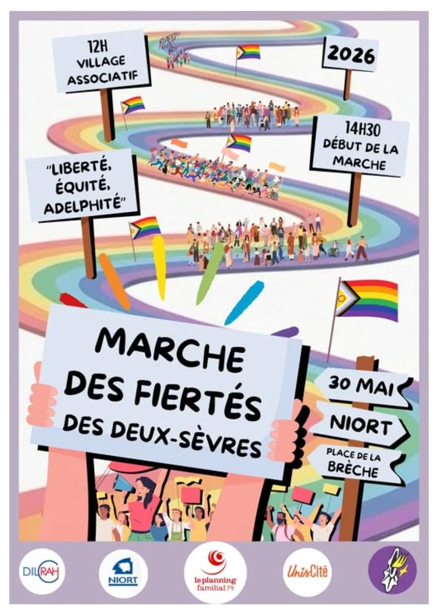

Appel à la mobilisation
À Niort, la Marche des Fiertés est une mobilisation pour l’égalité
Date indiquée par Facebook · 29 mai 2026
Repères éditoriaux
Nous avons relayé l’appel à la Marche des Fiertés du samedi 30 mai 2026 à Niort. Place de la Brèche, l’affiche annonçait le village associatif dès 12 h et le départ de la marche à 14 h 30. C’est un rendez-vous de solidarité pour les droits et la visibilité des personnes LGBT+.
Texte conservé avec la publication
La Marche des Fiertés est bien plus qu’un défilé : c’est une manifestation politique et revendicative, un moment de visibilité pour toutes les personnes LGBT+, et une célébration de nos diversités. Rejoignez-nous pour marcher fièrement et faire entendre nos voix !
#Niort Place de la Brèche le Village associatif dès 12h puis la Marche à partir de 14h30
#lgbt #solidarite

Sources
Archive rouge · export Facebook · AR-0002-FB-00766
À lire aussi · À Niort, appel à se rassembler en mémoire de Lyhanna et en soutien aux victimes